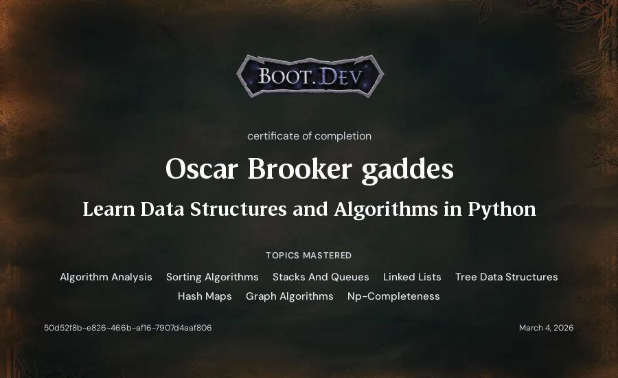
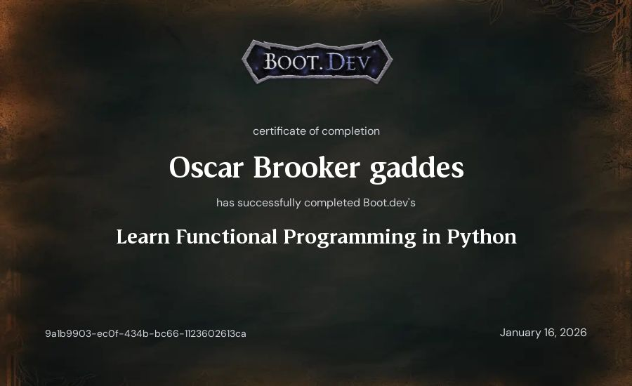
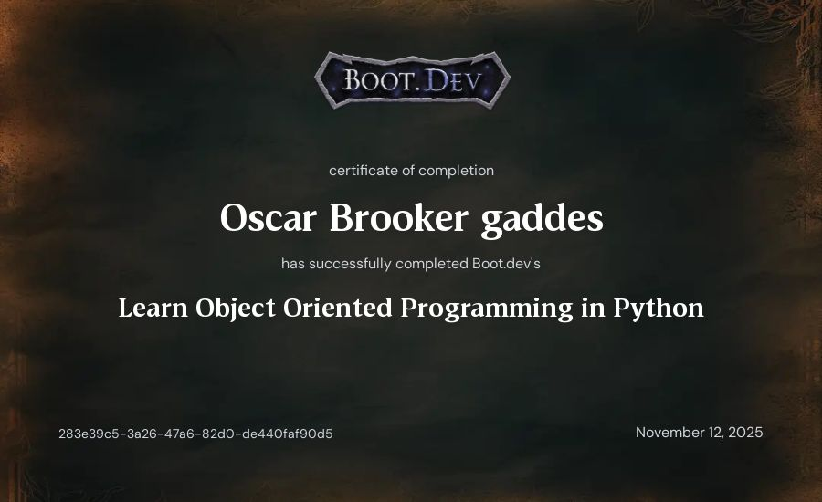
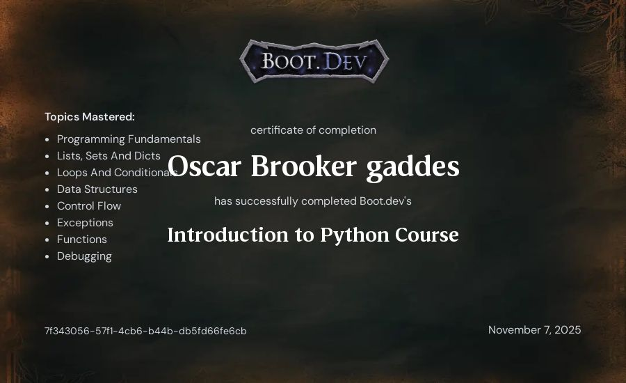

Learn Retrieval Augmented Generation
In this course I used Retreival Augmented Generation to create a search tool for a json movies database.
I really enjoyed the complexity of the work and I learnt alot of new python skills aswell as further refining skills I already had.
Learn https Clients in Python
Skills Learnt
- Http Protocol Fundamentals
- Url Structure.
- Http Methods.
- Dns And Networking.
- Http Headers.
- Https and Security.

Learn Data Structures and Algorithms in Python
Skills Learnt
- Algorithm Analysis.
- Sorting Algorithms
- Stacks And Queues.
- Linked Lists.
- Tree Data Structures.
- Hash Maps.
- Graph Algorithms.

Learn Functional Programming in Python
In this course I learnt about functional programming and how to create and use functions effectively.
I learnt new skills that helped me improve my use of python functions and overall knowledge.

Learn Object Oriented Programming in Python
In this course I learnt about Object Oriented Programming, which is a pattern used for writing clean code.
This course tought me some foundational skills that I still use even now, and helped me progress my knowledge.

Introduction to Python
In this course I learnt the basics of python such as Loops, Conditionals, Lists and Dics, Functions and more.
This was the first python course I completed and refreshed my mind and reminded me of the fundementals of python programming.
Learn Linux
In this course I learnt the basics of linux command prompt and how to navigate within the linux cli.
This was my first introduction to linux and taught me key skills that I still use to this day.
Learn Git
In this course I learnt the basics of the git command line tool and how to create, edit, commit and push repos.
This course tought me the bascics of git which is one of the most important tools in development.